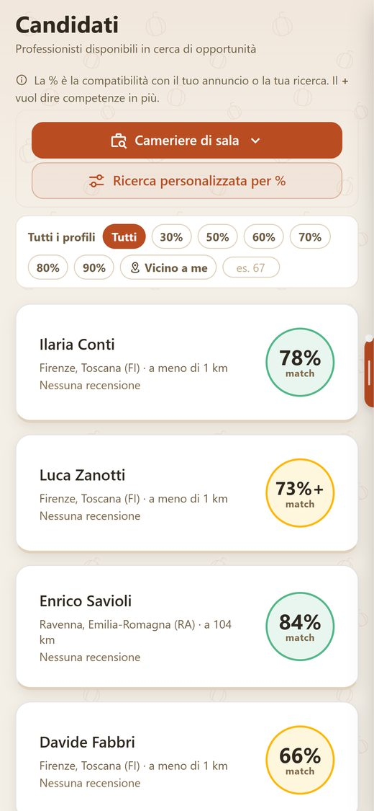
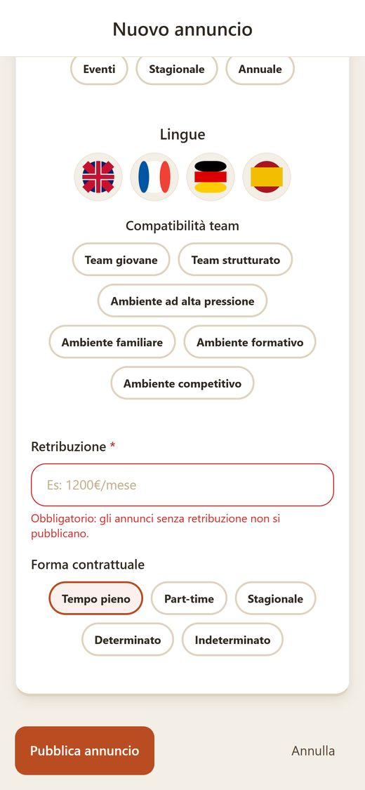
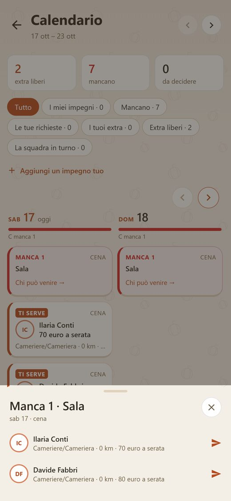
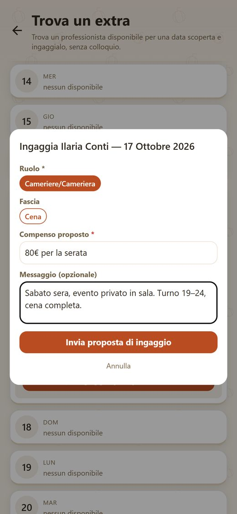
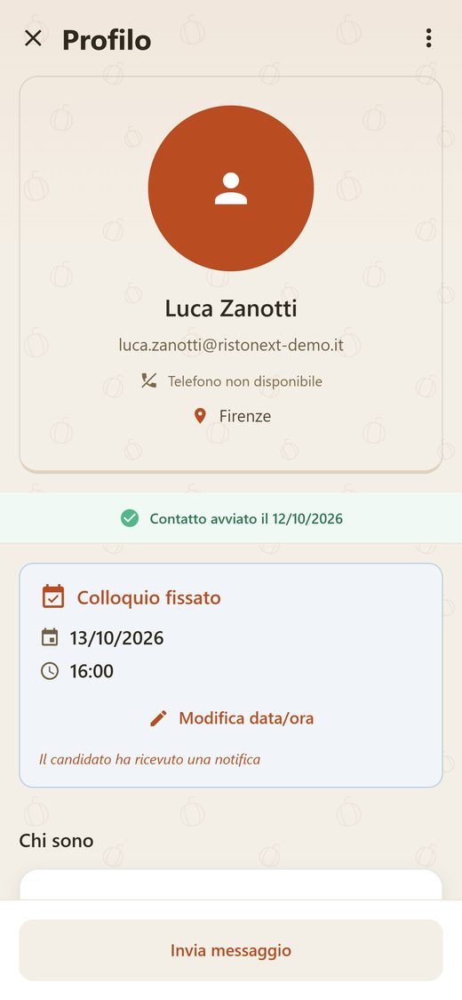
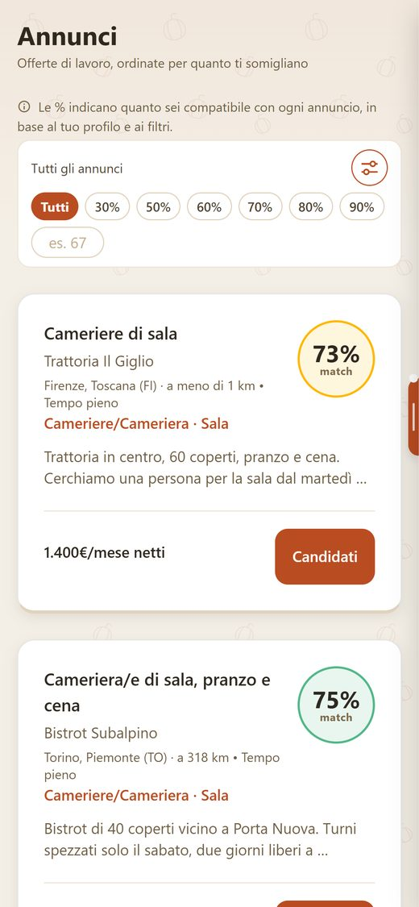
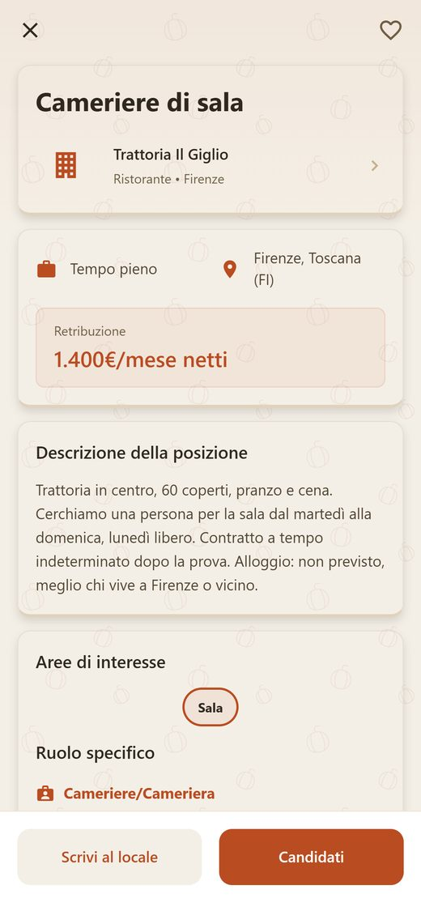
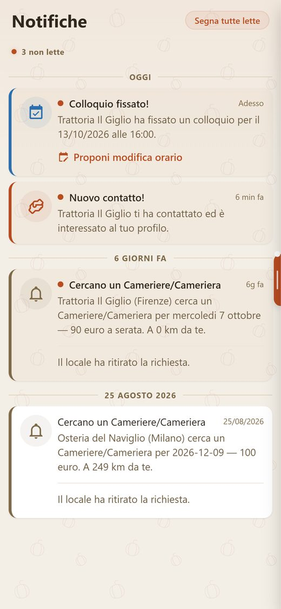
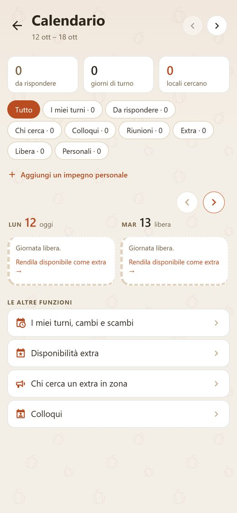

L'app italiana che mette in contatto camerieri, cuochi e baristi con i locali della loro zona.
RistoNext è un'app per iPhone e Android, nata in Italia per la ristorazione e l'accoglienza.
Da una parte ci sono i locali: ristoranti, trattorie, bar, hotel, pizzerie. Pubblicano gli annunci, gestiscono i turni e trovano un extra quando qualcuno manca.
Dall'altra ci sono i professionisti: camerieri, cuochi, baristi, personale di sala e di cucina. Vedono gli annunci della loro zona, con la paga scritta, e capiscono subito quanto sono adatti.
In mezzo c'è una percentuale di compatibilità, calcolata tra il profilo e l'annuncio prima che le due parti si incontrino.
Il sabato sera manca una persona in sala. L'extra confermato non si presenta. I curriculum arrivano da chi abita a cento chilometri o non ha mai fatto il mestiere.
Annunci vaghi, paga "da definire", telefonate a vuoto. Nessun modo di far vedere cosa si sa fare davvero, oltre a un foglio con l'elenco dei posti dove si è stati.
RistoNext parte da qui: mettere insieme le persone giuste, nel posto giusto, nel turno giusto.
Chi cerca personale vede i professionisti disponibili nella sua zona, ordinati per compatibilità con l'annuncio.

Un annuncio senza retribuzione non si pubblica: il campo è obbligatorio.

Il calendario segna i turni scoperti. Un tocco e compaiono le persone disponibili quella sera, con distanza e compenso.

La proposta arriva al professionista con tutto scritto: giorno, fascia, compenso e un messaggio. Lui accetta o no, e il calendario si aggiorna.

Dalla scheda del candidato si sblocca il contatto, si fissa il colloquio e si segna l'assunzione. Ogni passo arriva al candidato come notifica.

Ogni annuncio dice quanto è compatibile con il tuo profilo, dove si trova e quanto paga. Niente "retribuzione da definire".

Locale, contratto, città, retribuzione e descrizione della posizione. Ci si candida con un tocco, oppure si scrive al locale.

Una notifica quando un locale ti contatta, quando fissa un colloquio, quando cerca un extra vicino a te e quando ti assume.

Turni, colloqui e giornate libere in un posto. Una giornata libera si rende disponibile come extra, e i locali vicini lo vedono.

Per chi cerca lavoro è gratis.
Per i locali pubblicare i turni e gestire squadra ed extra è gratuito. Gli abbonamenti si scelgono solo se servono.